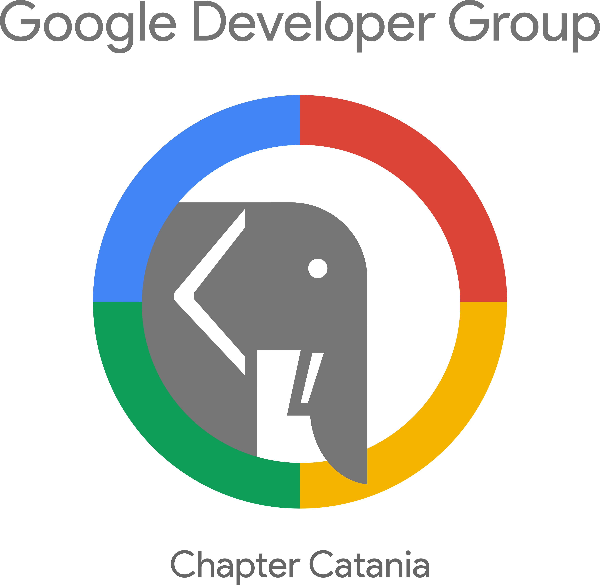

Riconoscimenti
Il sito del Bastione degli Infetti è un progetto congiunto di
GDG Catania,
opendatahacklab
e Comitato Popolare Antico Corso. Hanno partecipato
Alberto Berrittella, Federico Frasca, Cristiano Longo, Michele Maresca, Gabriele Messina,
Teresa Micarelli e Maria Cristina Ruggieri.



Crediti per le Immagini
- by Icons8 (https://icons8.com/c/flat-color-icons) [MIT (http://opensource.org/licenses/mit-license.php)], via Wikimedia Commons (derivato) (derivato);
 by Google Inc.
[CC BY 4.0 (http://creativecommons.org/licenses/by/4.0)], via
Wikimedia Commons(derivato);
by Google Inc.
[CC BY 4.0 (http://creativecommons.org/licenses/by/4.0)], via
Wikimedia Commons(derivato); deriva da una delle icone del
W3C RDF Resource
Description Framework;
deriva da una delle icone del
W3C RDF Resource
Description Framework; by Endless
Icons (derivato);
by Endless
Icons (derivato);- By Stefania Servidio (The Noun Project) [CC BY 3.0 us (http://creativecommons.org/licenses/by/3.0/us/deed.en)], via Wikimedia Commons (derivato).
 GitHub Mark (derivato);
GitHub Mark (derivato);